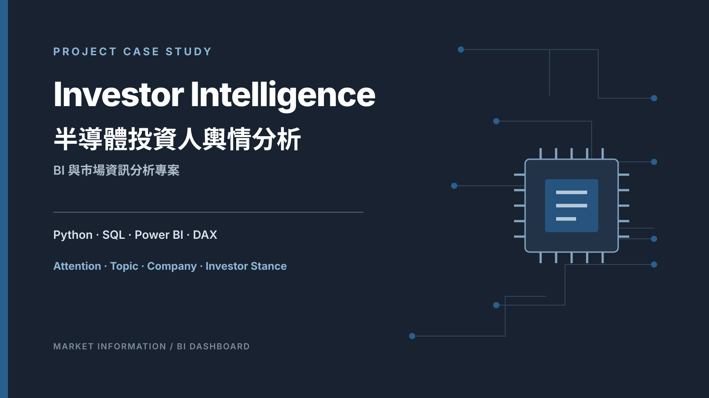
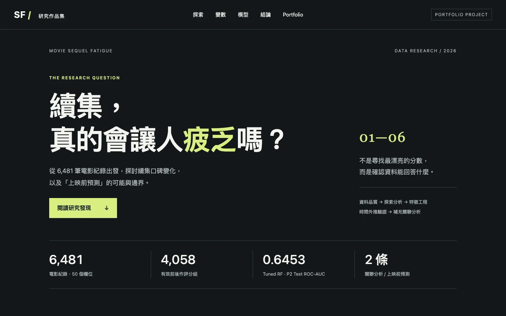
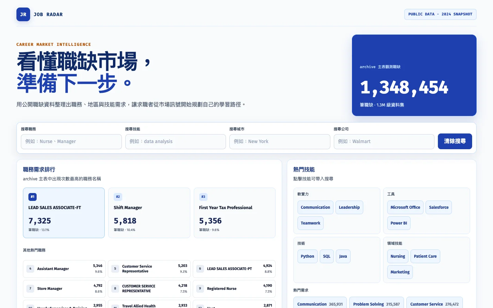
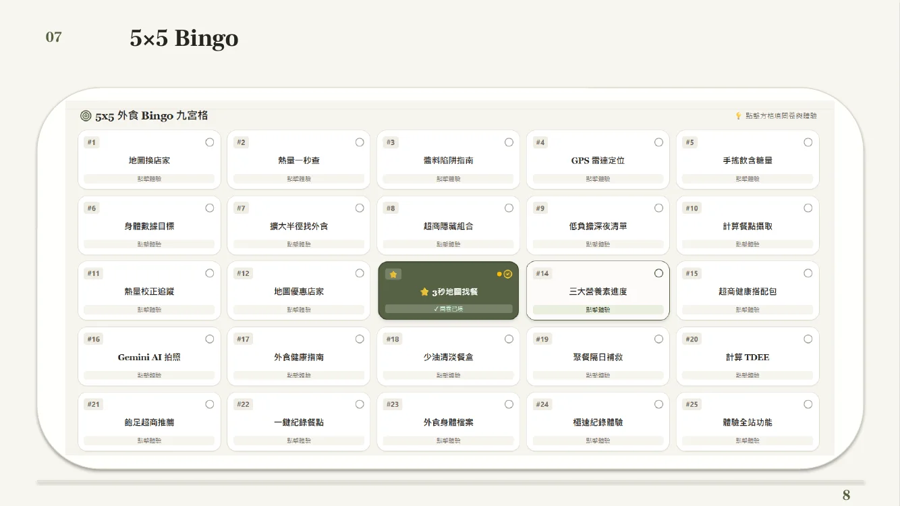

商品頁管理專員
- 參與跨部門、跨區域專案執行，協調營運流程與工作進度。
- 運用 KPI 追蹤、Gemba 觀察與 RCA 分析瓶頸，並建立 SOP 推進標準化。
- 履歷紀錄：推動流程改善後，作業錯誤率降低約 35%。
01
About Me
具備企業管理碩士背景，擁有營運管理、流程改善與專案執行經驗。
過去工作中曾參與跨部門專案推進、KPI 追蹤及作業流程優化，透過現場觀察、問題分析與數據追蹤，協助改善營運流程並降低作業錯誤。
近年進一步培養 Python、SQL、Power BI 等資料應用能力，並透過市場分析、BI 儀表板、數據研究及產品行銷等專案，將資料整理與分析結果應用於問題理解與專案規劃。
進一步了解我02
Work Experience
從行銷與電商執行，逐步延伸至營運改善、流程標準化與跨部門專案。
03
Selected Projects
四個專案展示從問題定義、資料分析到可溝通交付的完整過程。

BI 與市場資訊分析專案
將 PTT Stock 討論整理為可追溯的注意力、議題、互動與投資人立場分析層。
Python · SQL · Power BI · DAX
View Case Study
數據研究專案
以時間邊界與資料洩漏控制，檢驗上映前資訊能否預測續集評分下滑。
Python · Machine Learning · Research Design
View Project
職缺市場與技能需求分析
以公開職缺資料呈現市場需求、技能組合、薪資、地理分布與經驗層級。
Python · JavaScript · Data Product
View Project
遊戲化產品行銷企劃
從高頻外食族的行為痛點出發，設計產品體驗、遊戲化機制、漏斗與 KPI。
Marketing Strategy · Gamification · KPI
View PresentationA-TIER
Data & BI Gallery
補充展示資料分析、互動式報表與商業資訊整理能力。
01
Customer Segmentation × Power BI
RFM analysis and interactive customer segmentation dashboard.
Power BI · RFM · Data Analysis
04
Skills
工具服務於問題；用流程、資料與溝通將工作轉成可追蹤的專案。
PROJECT / OPERATIONS
DATA / BI
BUSINESS / MARKETING
Contact
如果您正在尋找具營運視角、資料應用能力與專案執行經驗的合作夥伴，歡迎與我聯繫。